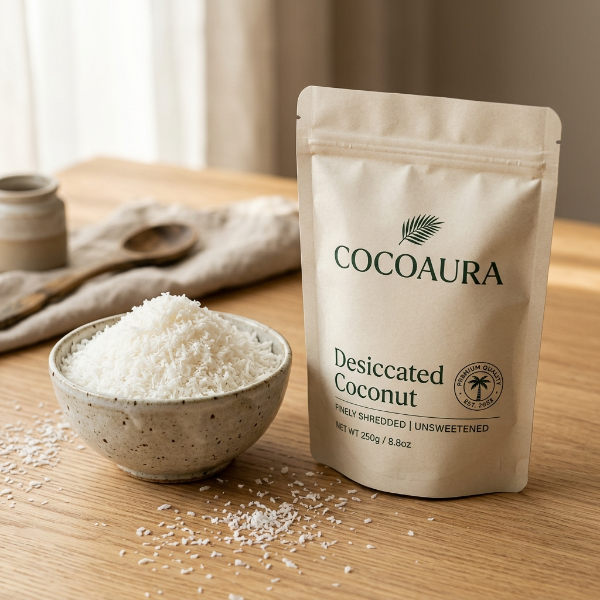
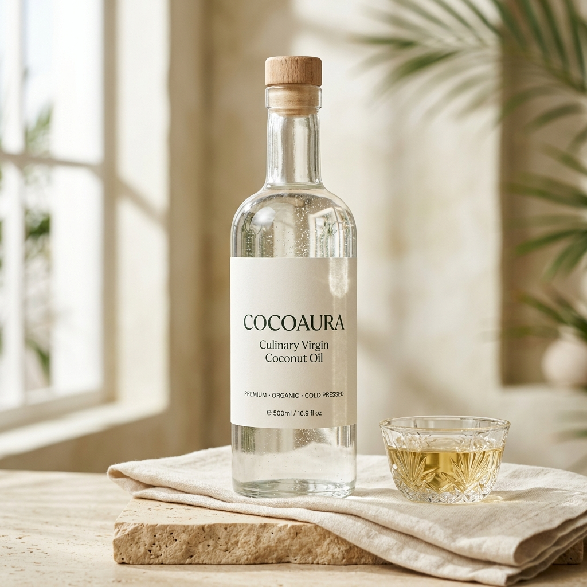

The Architecture of Unrefined Coconut.
“Pure Coconut. Naturally Better.” — An ingredient-first study in single-origin coastal coconuts, cold mechanical extraction, and apothecary glass preservation for the discerning pantry.

Featuring Raw Centrifuge Virgin Oil, Amber Expeller Oil, Patisserie Desiccated Cuts, Hearth-Toasted Chips & Tender Grove Water.
Browse Curated Grid ↓Curated by Culinary Discipline
Five Expressions of One Fruit
Every part of the mature and tender coconut is honored through dedicated, low-intervention craft techniques.

Virgin Coconut Oil
Chilled Wet-Milling Centrifuge · 250ml – 1000mlSpun from fresh first-press coconut milk within 6 hours of cracking. Water-clear when warm with a whisper-light fresh aroma.

Cold-Pressed Coconut Oil
Low-RPM Expeller (< 42°C) · Amber Glass & ReserveMechanically pressed from gently dehydrated white kernel and triple-filtered through unbleached cotton for traditional cooking.

Desiccated Coconut
Fine & Medium Patisserie Shreds · UnsweetenedSnow-white pared kernel air-dried without sulfites or whiteners, retaining natural coconut oil richness for baking.

Coconut Chips
Hearth-Toasted Nectar Glaze & Raw Sun-DriedThick-shaved ribbons kettle-baked in small rotary batches for an airy, caramel-golden crunch straight from the pouch.

Tender Coconut Water
7-Month Single-Origin · Frosted Glass BottlesMicro-filtered directly from young green coconuts at peak natural sweetness—never from concentrate and zero added sugar.
Two Oils, Two Culinary Personalities
Understanding how extraction method shapes aroma, mouthfeel, and kitchen application.

Raw Virgin Coconut Oil
Pressed into fresh coconut milk, then spun in chilled stainless centrifuges.
- Sensory Profile: Delicate, floral, fresh-off-the-tree aroma; ultra-clean finish.
- Visual Appearance: Water-clear liquid when warm; snowy porcelain solid when cool.
- Best For: Delicate pastry, raw confections, finishing drizzles, seafood searing & skin rituals.
Cold-Pressed Coconut Oil
Slowly pressed from warm-air dried mature kernel and cloth-filtered.
- Sensory Profile: Richer, rounded, gently toasted nutty coconut character.
- Visual Appearance: Pale golden-ivory tint when liquid; creamy white when solid.
- Best For: Daily skillet sautéing, spice tempering, curries, roasting & family baking.
Whole-Fruit Craft & Zero-Waste Philosophy


Save 10% on Your First Pantry Order
Experience the difference of same-day centrifuge Virgin Coconut Oil and hearth-toasted chips. Apply code COCOAURA10 in your shopping cart, plus enjoy complimentary ground shipping on orders over $60.
Wholesale & Private-Batch Enquiries
We supply artisanal bakeries, organic grocers, boutique hotels, and clean-label food manufacturers with 5L–200L oil drums and 25kg desiccated coconut sacks with complete batch documentation.